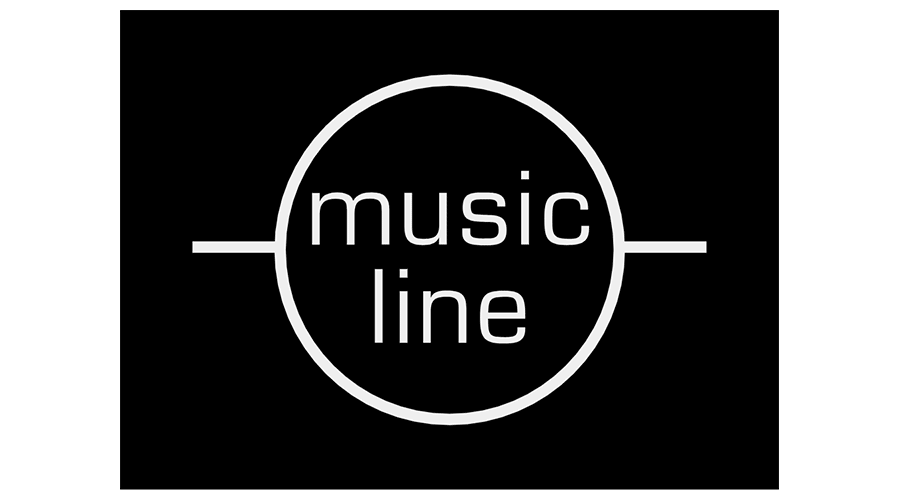
Music line
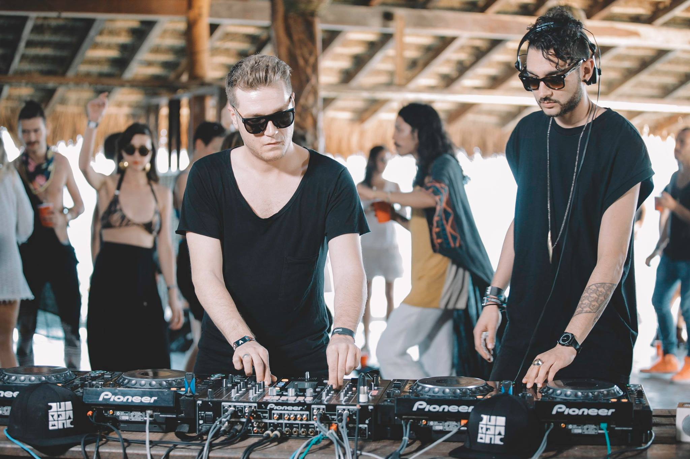
Adriatique
In 2016 they founded a record label and platform for the arts called Siamese, which releases their own music as well as productions by others. Siamese has released music by Luca Ballerini, Ed Davenport, Sebastian Mullaert and Eduardo De La Calle .
Adriatique are also signed to Diynamic (Solomun’s label) and Afterlife (Tale Of Us’ label). On Tuesday 11 September 2018 Adriatique announced their debut album ‘Nude’ would be released on Afterlife on 26 October 2018.[5] Past releases include EPs for Cityfox and Culprit , as well as remixes for Moby, DJ Hell, M.A.N.D.Y, Marc Romboy and Stephan Bodzin.
In 2017, Adriatique recorded a BBC Radio 1 Essential Mix.They have also won three Swiss nightlife awards.
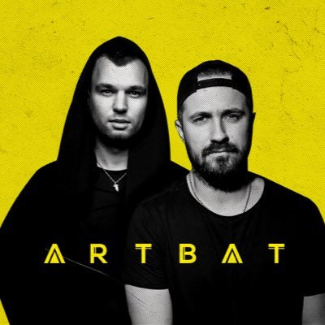
Artbat
Today Artbat are among the most successful Ukrainian electronic acts and enjoy global recognition. Just a year after Artur and Batish,
two experienced deejays and producers from Kiev, joined their forces as Artbat, the project
has completed a rewarding transition from the debut release to performing at the Destino club, Ibiza.
The key to Artbat’s success lies within their powerful and inventive sound of the highest quality.
Their tracks have an impressive capacity to fuel both intimate dancefloors and huge arenas with energy and drive.
And these are just the reasons many renowned artists are attracted by Artbat’s music. Such dance music authorities like Solomun, Maceo Plex,
and Richie Hawtin regularly spin Artbat’s tracks during their sets.
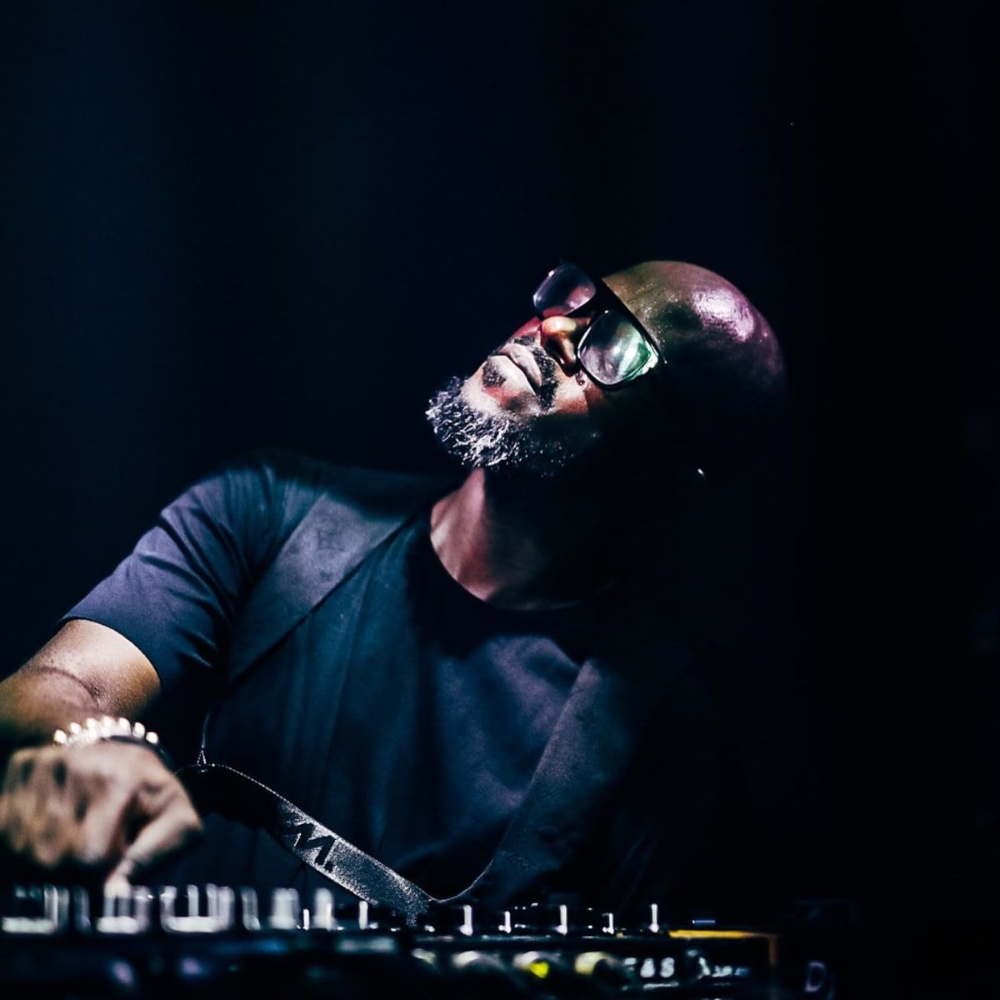
Black Coffee
Nkosinathi Innocent Maphumulo (born 11 March 1976), better known by his stage name Black Coffee, is a South African DJ, record producer and songwriter. Coffee established his own record label Soulistic Music, released debut self-titled album Black Coffee (2005), which incorporated elements of R&B and jazz.
His career began around 1994 and became prominent after participating in the 2004 Red Bull Music Academy, since then he has released nine studio albums, as well as a live DVD.
Black coffee
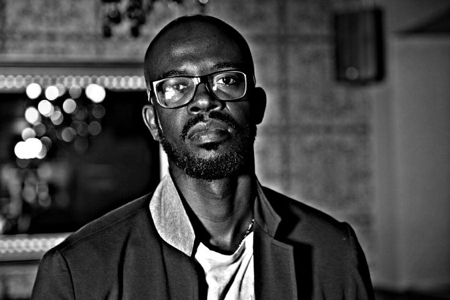
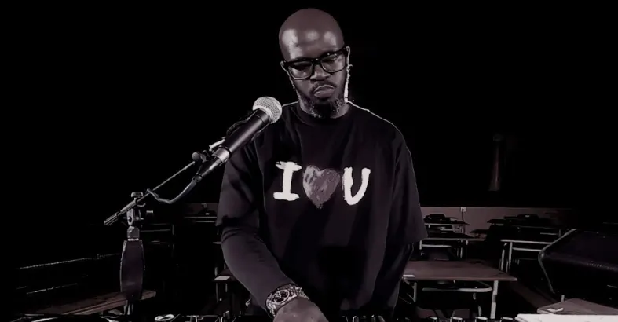
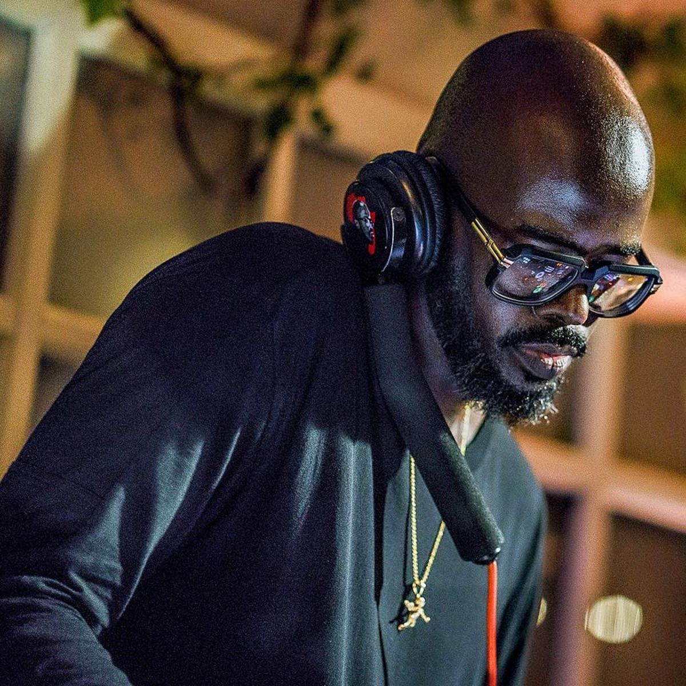
He majored in Jazz Studies at Technikon Natal, now known as the Durban University of Technology,
before working as a backup singer for Madala Kunene together with then schoolmates:
Mnqobi Mdabe (Shota) and Thandukwazi Sikhosana (Demor). Maphumulo,
Shota and Demor later formed an Afro-pop trio called SHANA (Simply Hot and Naturally African) which was signed to Melt 2000, then headed by Robert Trunz.
He was chosen as one of two South African participants in the Red Bull Music
Academy in 2003, jump-starting him into the South African dance music scene. His first big break was when his song 'Happiness' was featured on the 'DJs at Work' album.
Artbat
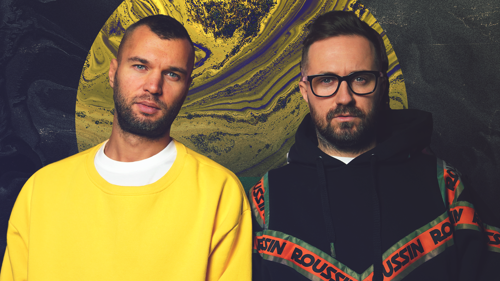
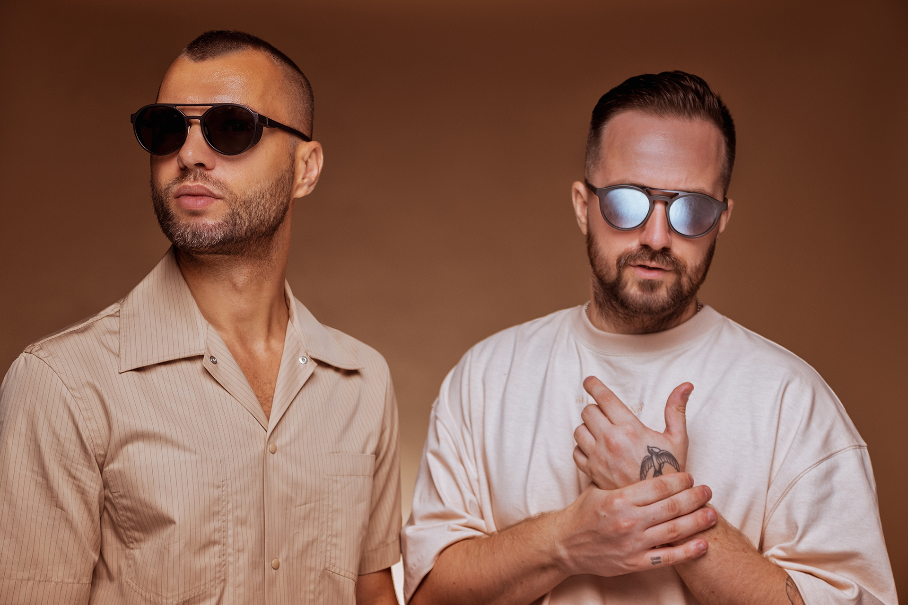
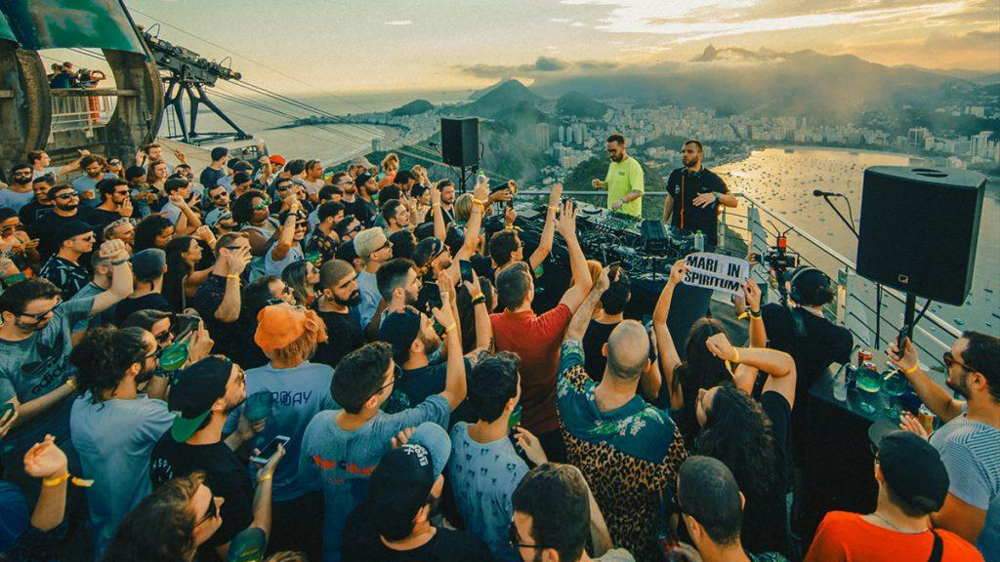
Since the emergence of their debut single ‘Mandrake’ Artbat’s discography has expanded to seven releases extra. Three of them appeared in the Beatport’s Techno Top 100 and their single
Confession’ has charted 37th in the Beatport’s Deep House Top 100. For a whole month ‘Mandrake’ remained in the Beatport Top 100 chart and has just become one of the most successful Definition:Music releases ever.
These remarkable achievements led Artbat to collaborations with the finest European labels like Diynamic, Suara, Parallel Records, Sincopat, 303Lovers and so on.
New Artbat’s track “Uplift” was released on 17th March 2017 on Diynamic Music climbed #4 in Tech House Top 100 and #7 in Top 100 All Genres Chart on Beatport.
Through their releases, Artbat make it perfectly clear that this duo has single possible purpose – to headline the upcoming night party. Working their magic as creators of many a dance
hit in techno and house varieties they are fire quick to drive everyone on the dance floor into the craze. Prior to coming together as Artbat, the two – Artur and Batish – gained invaluable experience as
performing DJs at plenty parties at the best nightclubs in Kiev.
Last year their touring outreach added a number of new concert locations such as Lebanon, Egypt, Greece, Dubai and Georgia – no wonder, Artbat’s schedule absorbs new dates at a steady pace.
Summer 2016 saw Artbat play Ibiza at Destino club. The guys successfully went on at Destino right after a series of trademark parties by Luciano, the godfather of Cadenza the label.
Now guys working a lot in studio and more releases coming this year, you can hear playing them on upcoming gigs in new season on Ibiza and all around the world.
Adriatique
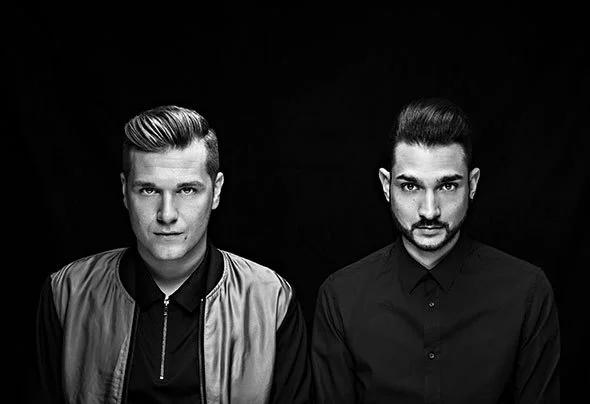
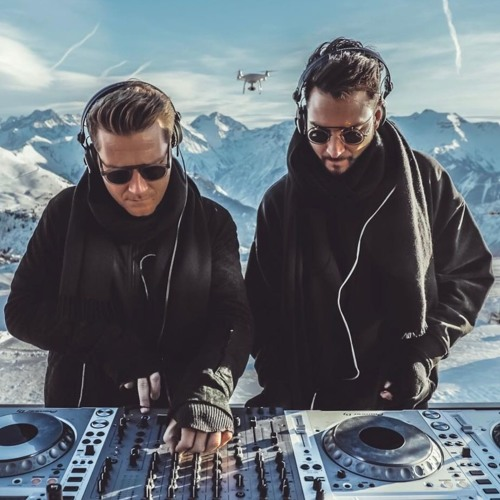
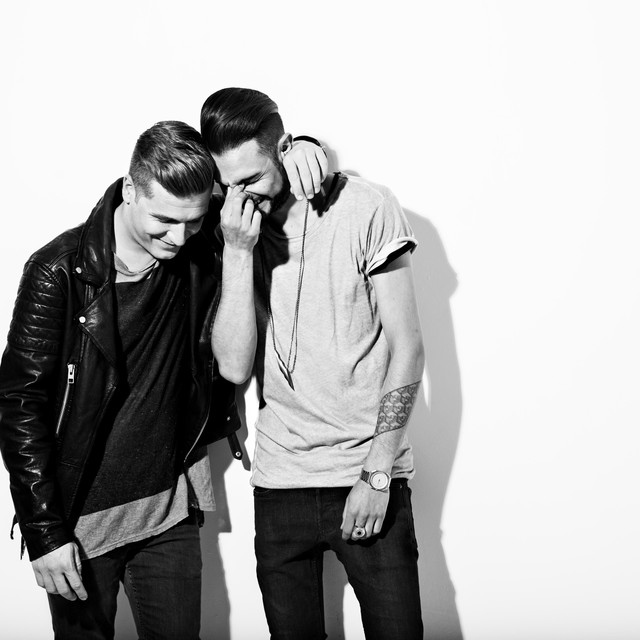
Both living in Zurich, each regularly performing as DJs, and both named Adrian S. perhaps it was inevitable that Adrian Shala and Adrian Schweizer would meet in 2008 and form a near-instant friendship.
Perhaps it was destiny. But it’s the professional bond that followed for which we are so lucky, a bond that would help them ascend the dance music community as the production and DJ duo known as Adriatique.
But inevitabilities aside, the basis of any great partnership is how one complements the other, which in the case of the Adrians, was evident from the outset. While one had honed his musical chops with house for the US and Detroit techno,
the other dwelled in deep melodies and European techno. One might gravitate toward the studio, while the other can't resist the temptation of the booth. One is blond, the other colloquially known as “dark-haired Adrian.” And it is the sum of many parts that gives us what we now know so well.
In the world of dance music, where producers might spend a few nights DJing and some DJs may dabble in producing, their partnership has mastered both while bridging the perspectives of two varied backgrounds bound by the ultimate desire to forge a unique sonic signature and connect with the audience that shares in their deeply held belief that music is meditation.
Forging relationships with artists and labels that share in their sensibilities, Adriatique has released on Zurich's Cityfox, L.A.’s Culprit, New York’s Wolf & Lamb, London’s Supernature, Canada’s My Favorite Robot, and most frequently, Hamburg’s Diynamic, which first brought them to the forefront with “Deep in the Three."